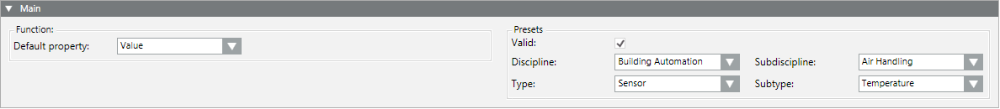

Create a New Function
Once you have a Functions block available to work in, you can create a new function from scratch, or by making a copy of an existing one.
Skip this step if you want to work on an existing function.
Create a Function From Scratch
- A Functions block is available at your customization level (for example, L4-Project).
- Select the Functions block where you want to create the new function. For example, Project > System Settings > Libraries > L4-Project> Fire > [subsystem library] > Functions.
- Select the Models & Function tab.
- Click New Object Model or Function
 .
. - In the New object dialog box, enter a name.
- Click OK.
- In the Main expander, select the appropriate presets:
- Discipline (Building Automation and Control, and so on)
- Subdiscipline (Air Handling, Room Control, and so on)
- Type (Sensor, Switch, and so on)
- Subtype (Temperature, Flow, and so on)
- Select the Valid check box.
- Select the corresponding entry for Default Property.
- Click Save
 .
.
- The function is saved in the corresponding folder and the presets are defined.


NOTE 1:
Each function requires a default property (for example, Value). The assignment can only be carried out after the individual properties are created in the Properties expander.
NOTE 2:
The function is not yet configured following this step. Select the workflow for Simple, Functional, Extended or Mixed function, depending on application.
Create a Function from an Existing One
- A Functions block is available at your customization level (for example, L4-Project) in which to save the function.
- In System Browser, select the function that you want to copy. For example, Project > System Settings > Libraries > L1-Headquarter > BA > Air system > Functions > SensorAirFlow.
- In the Models & Functions tab, click Save As.
- In the Save Object As dialog box, select the Functions block where you want to save a copy of the function. For example, L4-Project > BA > Air System > Functions.
- Enter a name and description for the new function, and click OK.
- A copy of the function is placed in the specified Functions block.